O que é React
Uma biblioteca js para criação de interfaces.
Utilizado para construir SPAs (Single Page Application).
Baseado em componentes.
Utiliza o JSX para renderizar o html.
E aplica o Virtual Dom para realizar as alterações de Dom.
Podemos Adicionar a um projeto ou criar um projeto com ele.
Site do React, e lá você tem acesso a sua documentação:
create-react.app
Instalando o React
Para instalar o React vamos utilizar uma ferramenta chamada Create React App.
Recebemos todos os arquivos da biblioteca e temos como executá-la.
Para utilizar precisamos do Node e também npm.
Essa ferramenta também otimiza o app gerado para produção.
E aplica o Virtual Dom para realizar as alterações de Dom.
É possível iniciar a aplicação com npm start.
Como criar seu primeiro projeto em React:
* tem que ter instalado o Node e o npm no seu computador.
Com o VScode aberto, já na pasta que você vai criar esse projeto.
Abra o terminal, e coloque esse comando:
npx create-react-app meu-projeto e clique em enter,
pode demorar um pouco para instalar.
Depois de instalado vai te dá algumas informações, como;
npm start Para inicializar o projeto onde vamos trabalhar.
npm run build Para gerar o build do projeto.
// Para iniciar o projeto que criamos, tem que primeiro ir até a pasta do projeto:
cd meu-projeto Para você entra na pasta do projeto que foi criado.
// Para o projeto rodar, inicializar:
npm start
Vai executar seu navegador automaticamente, se não, você veja os links que serão gerados e clica em um deles.
Irá abrir essa página no seu navegador :

Veja os arquivos que ele criou no VScode:

Entendendo o JSX
O JSX é como um HTML, porém dentro do código JavaScript.
É a principal maneira de excrever HTML com o React.
Podemos interpolar variáveis, inserindo ela entre {}.
É possível também executar funções em JSX.
Inserir valores em atributos de tags também é válido em JSX.
Aulas Práticas:
* Abra o projeto que foi criado na última aula, colque esses comandos no terminal;
Para iniciar o projeto, dentro da pasta dele:
npm start.
Para encerrar, fechar a conexão clique em:
CRTL + C .
o HTML DEVE ESTÁ CORRETO!!
Esse é o print do código de como fica a parte do App:

Repare que no início, temos a importação, no caso desse código está importando o css,
que será usado nessa parte do código.
Já no final do código ele vai exporta o que foi criado, ali.
Veja o print:
E no meio temos a função, onde criamos muitas coisas entre elas criar outra função,
que vai retorna a configuração que fizermos ali dentro.
Criando uma variável e fazer a interpolação
* Dentro da function crie uma variável, a minha terá o nome de "name':
const name = 'Giovani'
E para chamar essa variável se usa o { } , dentro da function mas na parte de return:
< h3 > Olá, { name }< /h3>
* Assim será exibido na página o nome.
Veja como fica no código:

Pode se usar esse comando por exemplo para processar esse "nome":
// cria uma nova variável
const NewName = name.toUpperCase( );
* Deixará o que estiver dentro da variável name, com as letras maiúsculas.
// para chamar no html e ser exibido na página
< h3 > Olá, { newName }< /h3>
Executando funcionalidades do JavaScript:
// No return, na parte da tags, adicione a tag "p"
< p > Soma: { 3+2 } < /p >
Podemos criar funcões dentro das funções.
Dentro da function App, crie outra "function", que vai retorna a soma de valores:
function sun(a,b){
______return a + b ;
__}
Na hora de chamar chamamos a função 'sun' e passamos o valor:
< p > Soma: { sun( 3, 7 ) } < /p >
Alterar atributos:
* Vamos alterar uma imagem
// criamos a variável que vai guarda essa imagem
const url = 'https://via.placeholder.com/150';
* neste caso a imagem é para vir da internet, mas pode ser de outro local, pasta.
// Para ser exibida na página, usando a tag "img"
< img src={ url } alt="minha imagem" / >
Importante:
* Só pode ter um elemento Pai e deve ter, dentro do "return",
veja na imagem do print do código, se não tivesse essa "div" estaria dando erro:

A palvra class não deve ser usada no React,
use a className essa deve ser usada para fazer as classes.
Criando Componentes no React
Permite dividir a aplicação em partes;
Os componentes renderizam JSX, assim como o App.js (que é um componente);
Precisamos criar um arquivo de componente;
E importá-lo onde precisamos utilizar.
Normalmente fica em uma pasta chamada components
Vamos para a prática:
* Dentro da pasta src, crie uma pasta com o nome components,
*Dentro da pasta "components" crie um arquivo com o nome HelloWorld.js
** É bom usar sempre letras maiúsculas no inicio das palavras.
* Com o "HelloWorld" aberto, vamos criar uma function com o mesmo nome.
function HelloWorld( )
* Já coloque o export:
export default HelloWorld ; .
* Dentro da function, vamos criar o return:
return (
)
* Dentro do return, colocamos o HTML:
< div > ->> precisa ter o pai
____< h1 > meu primeiro componente < /h1 >
< /div >
Veja na imagem como fica o HelloWorld.js

Para ele poder aparecer na página, tem que importa onde você quer usá-lo:
* Vai no "App.js" e vamos importa ele lá .
Com o App.js aberto, na parte de cima importe o "HelloWorld";
import HelloWorld from './components/HelloWorld';
Agora só adiciona dentro do "return", como uma tag:
< HelloWorld/ >
Veja como fica o código na hora de importa:
Um componente tem que ser reutilizavél, ou seja pode ser usado em outro lugares.
* Vamos criar outro componente, com o nome de "Frase".
* O jeito de criar é igual ao componente "HelloWorld".

** O componente "Frase" pode ser reutilizado depois em vários lugares e várias vezes.
Veja na imagem o código:

Trabalhando com Props
As props são valores passados para componentes.
Podem ser deixadas dinâmicas , ou seja mudando a execução,
por causa do valor da prop.
O valor é passado como um atributo na chamada do componente.
E precisa ser resgatado dentro de uma propriedade/argumento,
chamada props na função de definição do componente.
As props são somente de leitura.
Aula prática:
* No projeto que criamos :
* Na pasta de components, crie um novo componente com o nome:
SayMyName
Na hora de criar a function passa o argumento props.
Veja como é o código na imagem:

* Dentro do return, adicione uma div e um paragráfo.
* Dentro do paragráfo você vai colocar assim:
Fala ai { props.name }, suave?
Veja imagem do código:

* Agora para inserir na página:
* No App.js import o SayMyName para poder usar esse componente
E aqui iremos passar o valor do atributo props, que está na esperando receber algo.
< SayMyName nome="Giovani" / >
Agora na página irá aparecer o texto que está no SayMyName,
com o nome que você adicionar aqui.
Pode ser passado usando uma variável, você cria a variável e passa no parâmetro.
Veja o código :
Exemplo usando mais de um props
* Crie outro componente dentro da pasta components, com o nome:
Pessoa.js
* Dentro dele crie a "function", desse jeito:
* Para ser inserido na página, import no componente "App.js".

** Para facilitar ainda mais, podemos fazer algumas modificações, retirar os props:
e adiciona variáveis como atributos.

Adicionando CSS
O CSS pode ser adicionado de forma global na aplicação,
por meio de arquivo index.css por exemplo.
Porém é possivel estilizar a nível de componentes;
Utilizamos o CSS modules para isso;
Basta criar um arquivo como: Componente.module.css,
e chamar esse CSS no componente.
Aula prática:
* No arquivo index.css, fica o CSS global que vai configurar todo projeto.
* Mas pode ser colocado um CSS individual para os componentes,
usando o CSS module.
* Para isso crie um arquivo com o nome que você deseja, e adicione:
module.css
** Por exemplo:Frase.module.css
No arquivo aberto, para criar "classes":
Não poder ter espaço, deve ser assim:
.fraseContainer
.frase_container
Veja na imagem o código css da frase.module.css:
Agora para adicionar, tem que importa o Frase.module.css no "Frase.js",
depois de importado vamos adicionar as classes, veja na imagem abaixo:
Fragmentos
Os react fragments permite a criação de um componente sem elemento pai;
O propósito é descomplicar os nós do DOM.
A sintaxe é < > e < / > , não há um nome para a tag.
Criamos no próprio JSX.
Aula prática:
* Crie um novo componente com o nome "List.js", veja na imagem como é:
* Depois de criado, vamos adicionar ele no App.js:
// importar a Lista.js
import Lista from './components/Lista';
// coloque dentro do return, a chamada para usar a Lista.js
< Lista / >
* Veja como fica a página:
* Agora vamos usar o fragments, deixar sem a div, somente ele:
* Na página ficará assim:
Veja que não mudou nada, então para facilitar e quando você precisar,
pode colocar o "fragments" ( < > < / > ) como elemento pai.
Avançando em props
Podemos definir tipos para as props, realizando uma especie de validação.
** String, number, entre outros tipos
Definimos em objeto chamado proTypes no próprio componente.
E ainda há possibilidade de definir um valor padrão.
Neste caso utilizamos o objeto defaultProps.
Aula prática:
* Crie um componente com o nome "Item.js", como na imagem abaixo:
* Na lista que criamos na aula anterior, tem que importa o "Item",
depois você coloca assim:
** Para garantir que seja passado somente strings e numbers,
vamos importa o PropTypes pacote que já vem com o React.
Irá fazer a validação se é string e numbers, que estão sendo passada.
Neste caso está dizendo que a marca é uma string, ou seja, texto,
Se não for uma string, colocar um número, irá dá erro no console:
** Pode ser adicionado no código o isRequired, será obrigátorio,
marca: PropTypes.string.isRequired,
O erro aparecer somente no console, a página abrirá normalmente.
É uma validação a nível de programador, por isso a página funciona normal.
DefaultProps
Ele vai deixar uma mensagem dizendo algo, se o "item" não estiver ali,
tipo uma mensagem de erro ou aviso que algo não foi feito corretamente.
Veja o código como fica:
Como aparece no navegador o erro, ou a mesagem:
Eventos no React (onclick, onchange e onSubmit)
Os eventos de React são os mesmo eventos do DOM.
Ou seja, temos eventos para responder a um click.
O evento é atrelado a uma tag que irá executá-lo.
Geralmente um método é atribuido ao evento.
Esse método deve ser criado no componente.
Aula prática:
* Crie um novo componente com o nome:
Evento.js para poder usar o evento.
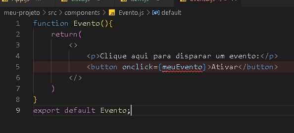
Agora vamos adicionar a função, que será acionada quando clicar.
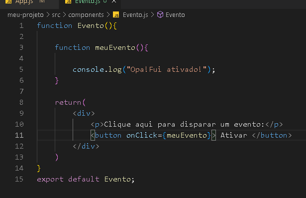
Na página ficará assim quando for clicado:
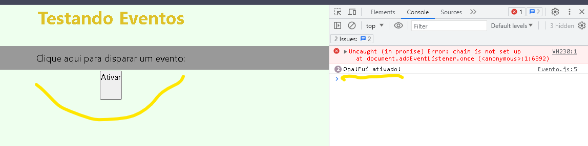
A idéia é sempre essa, mas pode mudar a lógica, valores e proprieadades.
Por exemplo, vamos fazer recendo um número e ao clicar mostra esse número:
Código do Evento.js:
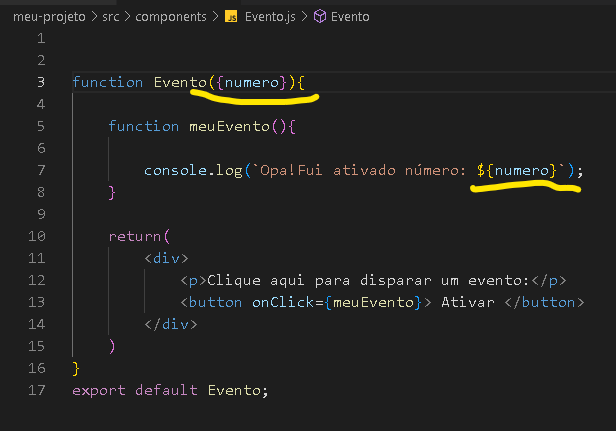
Código do App.js, passando o número e aparecer na página:
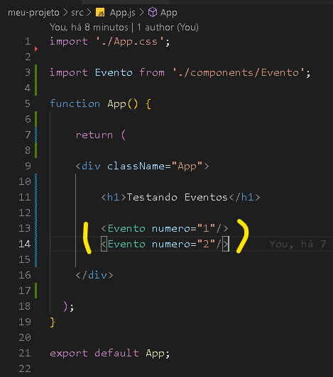
Eventos no React (onclick, onchange e onSubmit) parte 2
Eventos de Formulário
* Crie um novo componente com o nome:
Form.js
Veja na imagem como deve ser:
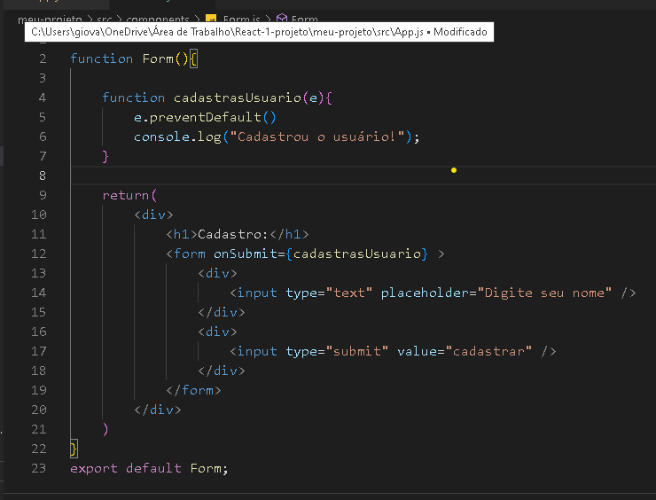
Esse e.preventDefault() que foi adicionado aqui,
serve para dá o sivso aqui no Front-end.
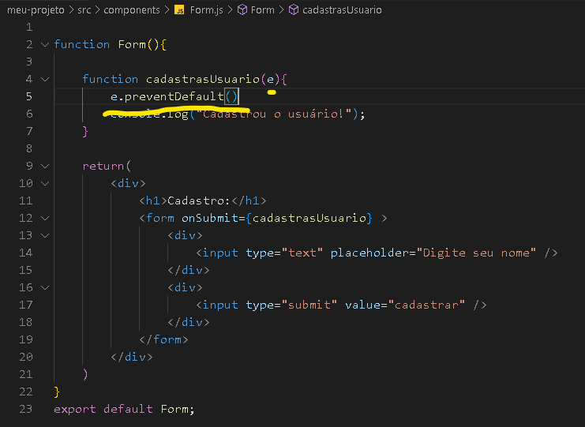
Para ser executado, dever ser chamado no componente App.js.
Veja como fica na página:
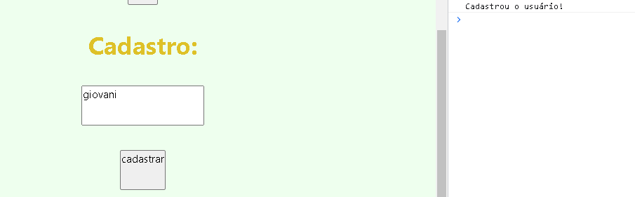
useState
O useState é um hook de react;
Com ele conseguimos manusear o estado de um componente de forma simples.
Este hook funciona muito bem com eventos.
Aula prática:
* Vamos usar o formulário, que criamos na outra aula.
* Importa o "useState", no arquivo form.js
* Crie duas variáveis, uma que vai receber e a outra irá setar o valor recebido.
Veja como ficou o código:
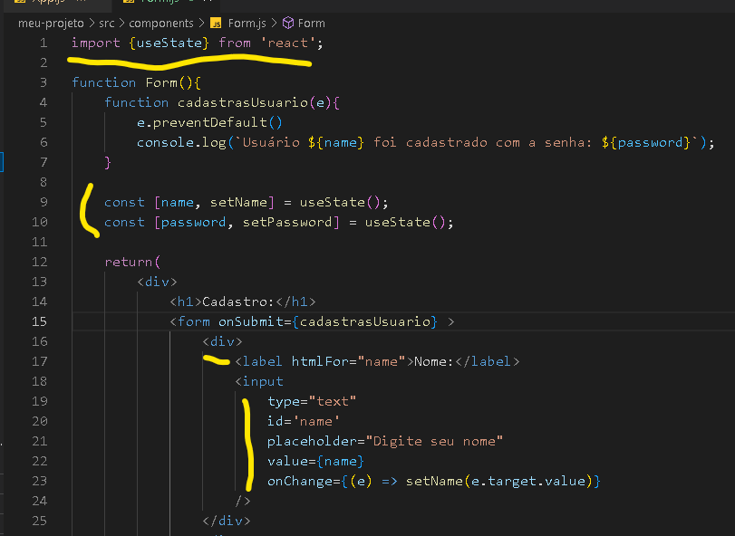
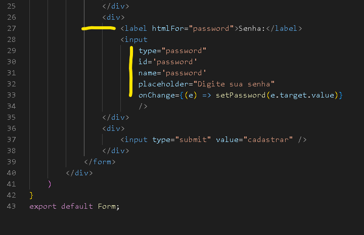
Passar eventos por props
Os métodos também podem ser passado por props.
Ou seja, um componente filho pode ativar o método de seu pai.
Vamos acessar o método por meio de um evento.
A sintaxe é a mesma de uma props de dados: props.meuEvento.
Aula prática:
Para nosso projeto ficar mais bonito, crie uma pasta dentro da pasta componente,
com o nome de evento para separar nossos componentes.
Dentro da pasta, vamos criar um novo componente com o nome Button.js.
Veja como deve ser o componente "Button.js":
Não precisa colocar "( )" por que irá retorna somente uma tag "button"
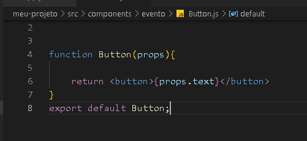
Depois de criado o componente, que vai receber algo do pai props.
Vai no componente que já criamos em outra aula, o componente Evento.js,
vamos importa o "Button" nele:

Agora vamos adicionar um evento no filho Button.
return < button onClick= { props.event } > { props.text } < /button >
No App.js, coloque somente um comando para chamar o evento.
< Evento / >
No componente Evento.js, faremos algumas modificações:
Veja na imagem como fica o código:

Veja na página como fica:
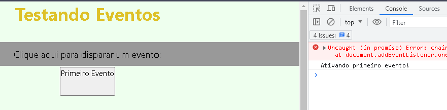
Tem como usar o mesmo Evento, somente modificando as props,
vamos ver como usar o mesmo componente para dois eventos diferentes:
No componente Evento.js, vamos adicionar outra "function" e outro "button",
com nomes diferentes, mas que executaram o mesmo evento:
Veja como é o código:
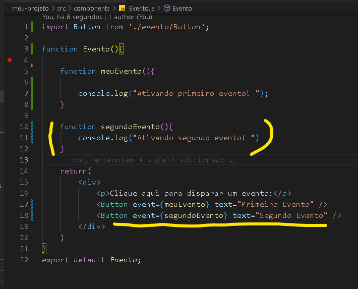
Renderização por condição
Podemos atrelar a exibição de algum elementoa um if.
Esta ação é chamada de renderização condicional;
Envolvemos as tags em chaves { };
Como as chaves executam JavaScript, criamos nossa condição;
É possível usar o state para criar as condições;
Aula prática:
* No componente "App.js" pode deixar apenas o "h1", escrito assim:
Renderização condicional
* Vamos criar um novo componente, com o nome de:
Condicional.js
* Criaremos um formulário básico, veja na imagem o código:
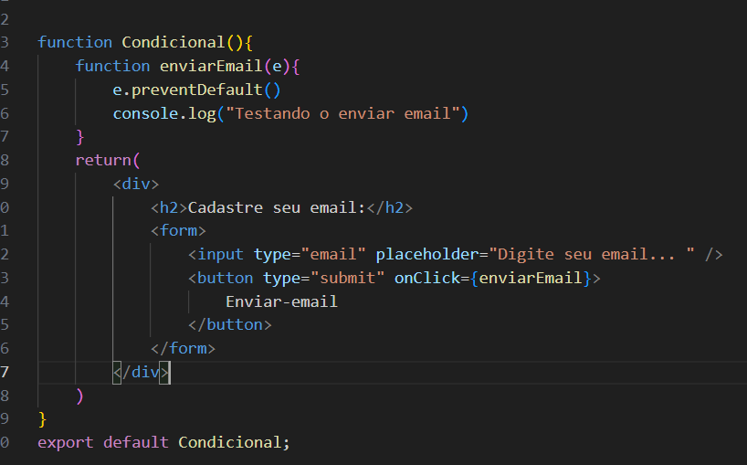
* Para ele aparecer na página, deve ser chamado no componente "App.js".
Agora iremos adicionar o "useState", importando no componente Condicional.js;
Criando duas variáveis:
const [ email, setEmail ] = useState( )
Para seta o "email", vamos usar o onChange;
Vamos adicionar ele na tag "input", ficando assim:
onChange={ (e) => setEmail(e.target.value) }
Mas queremos manipular esse email como se fosse email do usuário;
Para vamos criar outro "state":
const [ userEmail, setUserEmail ] = useState( )
Vamos criar um método que quando o usuário clicar o email seja o userEmail;
No "function enviarEmail", vamos apagar o "console.log" e colocar assim:
setUserEmail(email)
Para saber se deu certo, vamos colocar abaixo do button, assim:
{ userEmail }
Veja como fica todo o código na imagem:
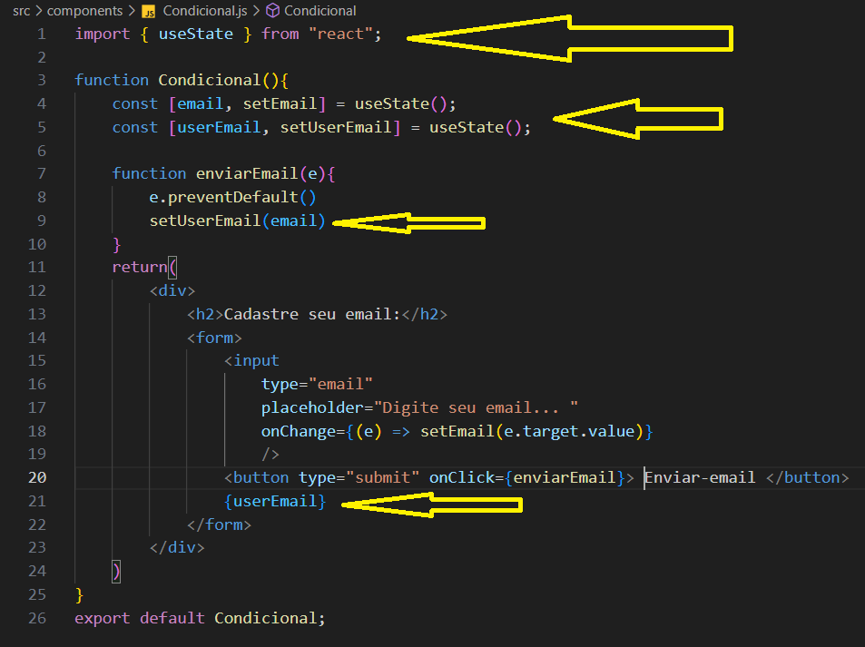
Na página deve aparecer assim:
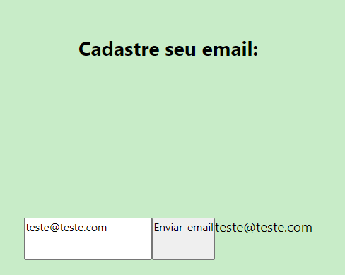
Agora podemos fazer uma verificação nesse "email";
Se for "verdadeiro" será adicionado outra "div":
Para isso, onde adicionamos o { userEmail }, abaixo do button,
vamos adicionar isso:
{ userEmail && (
__ < div >
______ < p > O email do usuário é: { userEmail } < /p >
__ < /div >
)}
Veja o código como fica depois dessa atualização:
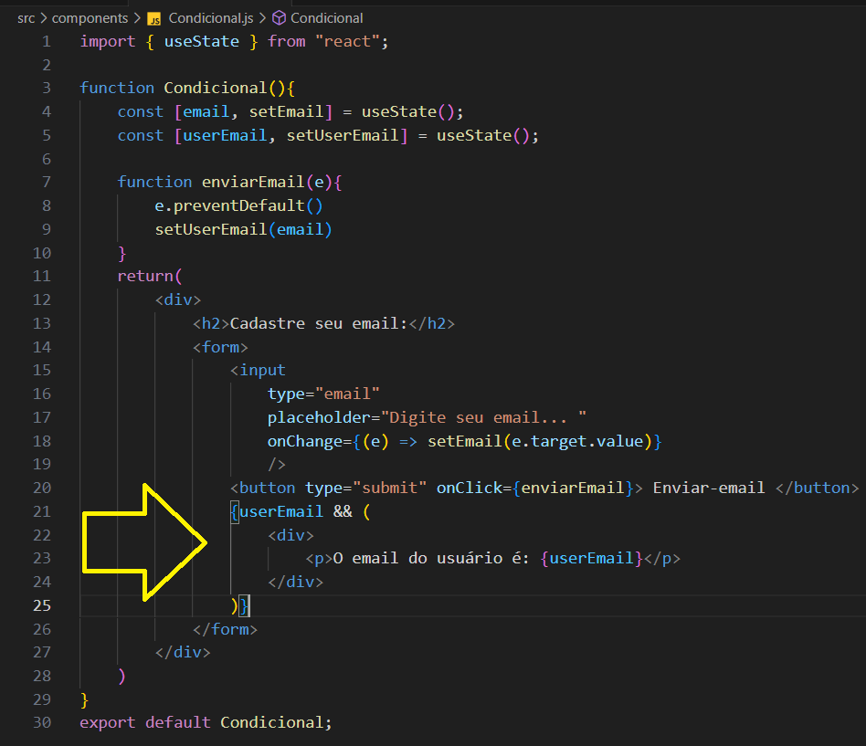
Veja na página como fica agora:

Podemos fazer um outro evento para limpar o email,
fazendo a alteração nessa mesma "div":
Para isso, basta adicionar um button dentro da verificação, abaixo do "p":
< button onClick = { limparEmail } > Limpar email < /button >
Agora criamos uma "function" que deixará vazio o "setUserEmail":
setUserEmail ( ' ' )
Veja o código como fica agora:
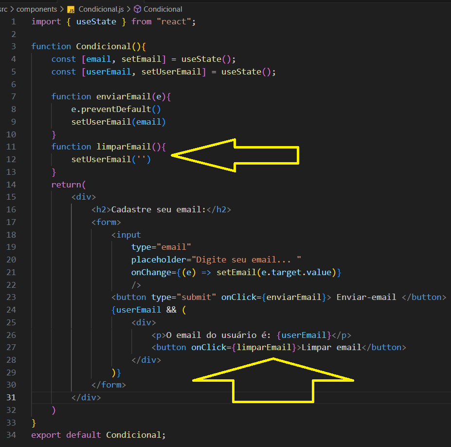
Veja como aparece na página:
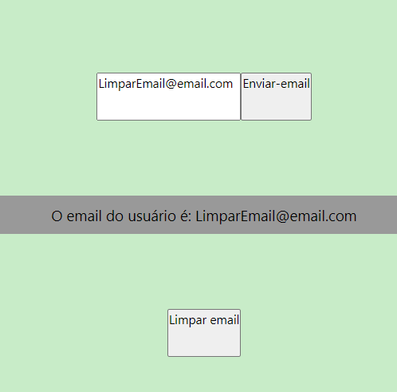